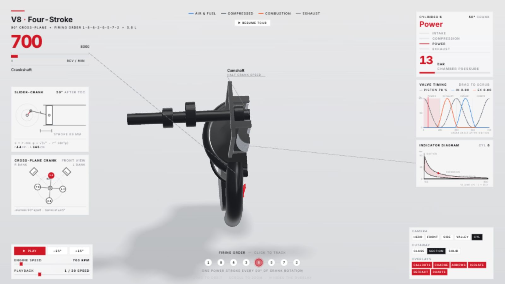

哨兵机器人
400 个链节、13 枚红色镜头与外露金属结构。沿路径巡航，观察转弯侧倾；隔离部件，调节展开幅度，拆开装甲与核心。
程序化同人模型 · 非官方电影资产两套可直接探索的 3D 作品。从曲轴的每一次转动，到机械触手的连续弯曲。在线操作，或下载完整离线页面；用配套 Codex 技能生成并继续修改。
安装 teardown-codex 后，可在 Codex 中调用技能，或直接运行命令。输出包含离线成品、可编辑源码和许可证。
使用 $teardown-codex，生成 V8 和哨兵， 输出到我的新项目目录并保留源码。 # 技能仓库内运行 npm run generate -- all --out ./my-machines